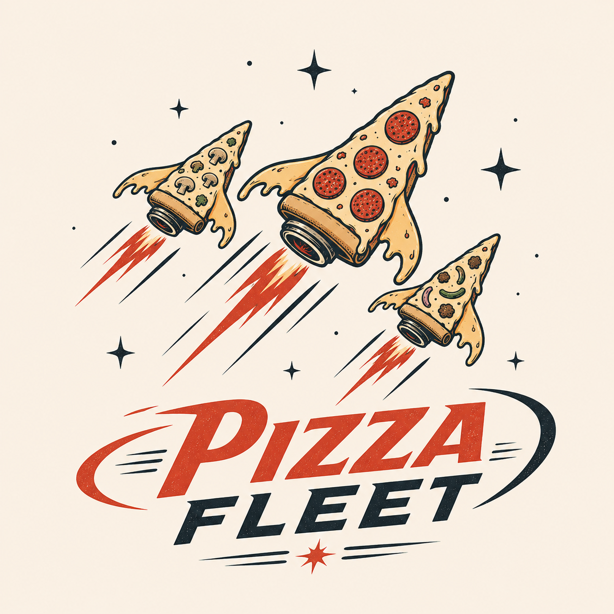

Pizza FleetPizza Fleet draws the AI coding agents you are already running as a world you can walk around in.
You have several agents going at once. They are in terminal panes you have lost track of, and one of them has been stuck for twenty minutes waiting for you to answer something. You do not know which one.
Pizza Fleet reads those panes and draws them as a castle. Every agent gets a body and a face. The one that needs you has a ? over its head. You click it and answer from inside the world.
For a senior engineer, this is a charming way to see something you could already read in a log. For everyone else, it is the only version of that information they can read at all.
It watches the terminal. It does not ask the agents to check in — a stuck agent stops reporting, and silence reads as fine.
If you found this page, you found it early.